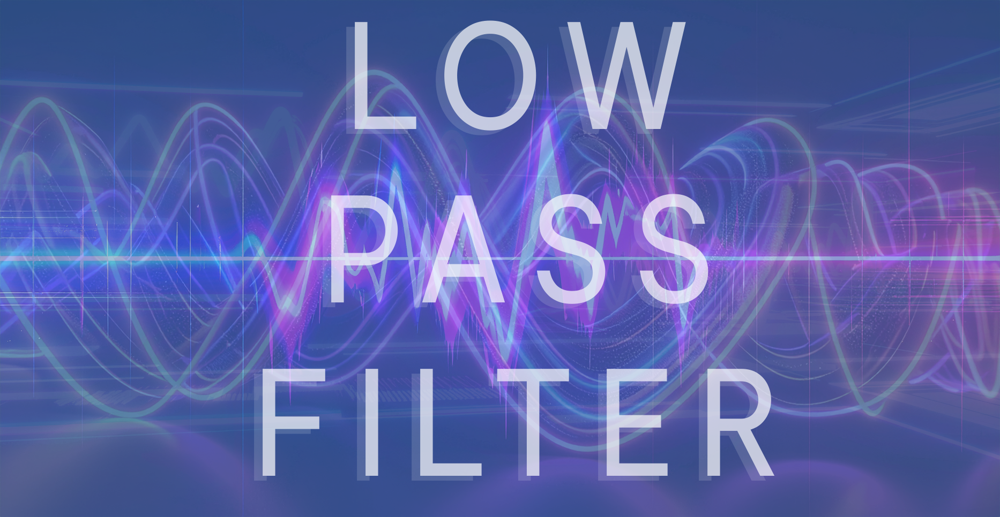

Innovative Low-Pass Filter
The Low Pass Filter
Preliminary testing indicates that this Low Pass Filter prototype offers greater passband flatness and Signal To Noise Ratio (SNR) compared to Infinite Impulse Response Filters, while maintaining a similar execution time and resource profile.
Authored in Python, however the mathematical nature of Low Pass Filters means it can be deployed in any language.
Tested with Matplotlib.